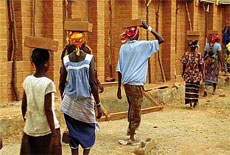

|
ZUM VERGLEICH (BY COMPARISON)
Harun Farocki | D/Ö 2009 | 61 min.
Material: 16mm
Format: 16mm
Original language: without dialogue;
English subtitles
Script: Harun Farocki, Matthias Rajmann
Camera: Ingo Kratisch
Editing: Meggie Schneider
Drawings: Andreas Siekmann
Sound: Matthias Rajmann
Production: Harun Farocki Filmproduktion, Berlin; Navigator Film, Wien
Print / Sales : Arsenal
"Bricks are manufactured in Africa, India and Europe and used to erect clinics, children’s homes, schools and residential buildings. Harun Farocki observed the different steps of the manufacturing process. Bricks are cast, fired or pressed by hands, machines or robots. The brick is the smallest unit and the sole focus of the film. The interconnecting elements are title cards displaying some brief information about the place and the construction method. Another comparison is evoked: The smallest unit of the 16mm image is the grain." (Stefanie Schulte-Strathaus) "Every shot in the film is of work procedures. I experimented, then chose the simplest montage form. In brief chapters, work with bricks is shown in a place, with the methods used there. The material is spread out for view, but the film does not compare." (Harun Farocki)
Harun Farocki, born in 1944 in Neutitschein (today Nový Jicín, Czech Republic). From 1966 to 1968, he studied at the German Film and Television Academy Berlin. Starting in 1966, he created more than 100 productions for film and television. Between 1974 and 1984, Farocki was an editor and writer for the magazine Filmkritik. Since 1996, his films and installations have been shown in numerous group and solo exhibitions at museums and galleries. He became a professor at the Academy of Fine Arts Vienna in 2006.
Films (selection): Die Worte des Vorsitzenden 1968 | Zwischen zwei Kriegen 1978 | Etwas wird sichtbar 1981 | Wie man sieht 1986 | Bilder der Welt und Inschrift des Krieges 1988 | Leben – BRD 1990 | Videogramme einer Revolution (zusammen mit Andrei Ujica) 1992 | Die Schöpfer der Einkaufswelten 2000 | Erkennen und Verfolgen 2003 | Nicht ohne Risiko 2005 | Zum Vergleich 2008
back
|